Analysis uses oscillators, Buy/Sell signal dots, and trendlines. Horizontal price lines and colored zones are excluded. Not financial advice.
| Ticker | Qty | % Alloc | Chart Rating | Entry Zone | Action | Notes |
|---|---|---|---|---|---|---|
| AMD | *** | *** | HIGH RISK | $260–280 | With a 3.4% allocation, consider taking partial profits to lock in gains. Do not add to the position at these levels; wait for a technical retest of the previous breakout structure. | Small position (3.37%), currently flagged as high risk. |
| BE | *** | *** | HIGH RISK | $120–140 | Given the 1.1% allocation, consider taking partial profits to lock in gains from the recent vertical move, as the current risk-to-reward ratio is unfavorable for adding new positions. | Small position (1.08%), high risk rating suggests caution. |
| GOOG | *** | *** | HIGH RISK | $310–330 | Hold the current 4.5% allocation. Do not add more shares at this level due to overbought conditions. Consider trimming slightly if the RSI crosses back below 70 to lock in recent gains. | Small position (4.52%), rated high risk at current levels. |
| NVDA | *** | *** | HIGH RISK | $170–180 | Hold current 1.4% position. Do not add at these levels; consider taking partial profits if the RSI fails to hold above 70 or if a bearish crossover occurs on the oscillator. | Small position (1.35%), high risk rating noted. |
| STX | *** | *** | HIGH RISK | $560–600 | Hold current 3.0% position. Do not add at these levels. Consider taking partial profits if the RSI crossover signals a bearish turn to lock in gains from the current rally. | Small position (3.05%), flagged as high risk. |
| AMZN | *** | *** | HIGH RISK | $245.00–255.00 | With 0.0% current allocation, do not chase the current peak. Wait for a cooling-off period or a dip toward $250 to initiate a starter position. | Watchlist — no position held |
| IREN | *** | *** | NOT YET | $32.00–36.00 | Hold current 1.1% allocation. The position is small enough to weather volatility, but adding here is not recommended given the bearish oscillator crossover and rejection at resistance. | Small position (1.11%), chart not ready for expansion. |
| SOFI | *** | *** | NOT YET | $14.50–15.50 | Hold current 1.8% allocation. Do not add to the position until the RSI shows a clear bullish reversal and the price establishes a higher low above the diagonal trendline. | Small position (1.85%), wait for improved technical rating. |
| DGRO | *** | *** | WAIT | $70.00–71.50 | Hold current 1.8% allocation. Do not add at current levels; wait for the RSI to reset or for a retest of the previous support zone before increasing position size. | Small position (1.80%), wait for better trend alignment. |
| GLD | *** | *** | WAIT | $380–400 | Hold current 2.7% allocation. Do not add to the position until the RSI shows a bullish crossover and the price establishes a higher low. | Small position (2.67%), wait for price confirmation. |
| SLV | *** | *** | WAIT | $52.00–56.00 | Hold current 2.5% allocation. Do not add to the position until the price stabilizes above the broken trendline or shows a clear reversal signal, as the current momentum remains unfavorable. | Small position (2.50%), maintain current stance. |
| VEA | *** | *** | WAIT | $62–64 | Hold the current 2.6% allocation (148.0 shares) and wait for clearer bullish reversal signals or a lower, more confirmed entry point, as the chart currently indicates bearish momentum. | Small position (2.56%) in developed markets. |
| VWO | *** | *** | WAIT | $54.50 – 56.00 | With a 10.4% allocation, the position is already significant. Recommend holding current shares and avoiding new purchases at this price level to prevent overexposure near local highs. Look to add only on a meaningful correction to the $54.00-$55.00 zone. | Moderate position (10.45%), the portfolio's largest single allocation. |
| VXUS | *** | *** | WAIT | $76.00–78.00 | Hold current 3.1% allocation. Given the neutral RSI and recent 'Sell' signal, avoid adding at current levels. Wait for a clearer entry signal or a pullback to support levels before increasing exposure. | Small position (3.13%), diversified international exposure. |
| HIMS | *** | *** | WAIT | $20.00–22.00 | Hold current 0.7% position. Do not add to the position until the price stabilizes above the trendline or shows a clear reversal signal on the RSI. | Small position (0.69%), waiting for setup. |
| LLY | *** | *** | WAIT | $800–825 | Maintain 0% allocation and wait for a confirmed reversal signal, as the current momentum is bearish. | Watchlist — no position held |
| TSLA | *** | *** | WAIT | $340–350 | Hold current 1.9% position. Avoid adding to the position until a clear bullish signal (RSI crossover or support bounce) is confirmed, as the current price action is indecisive. | Small position (1.91%), wait for clearer trend. |
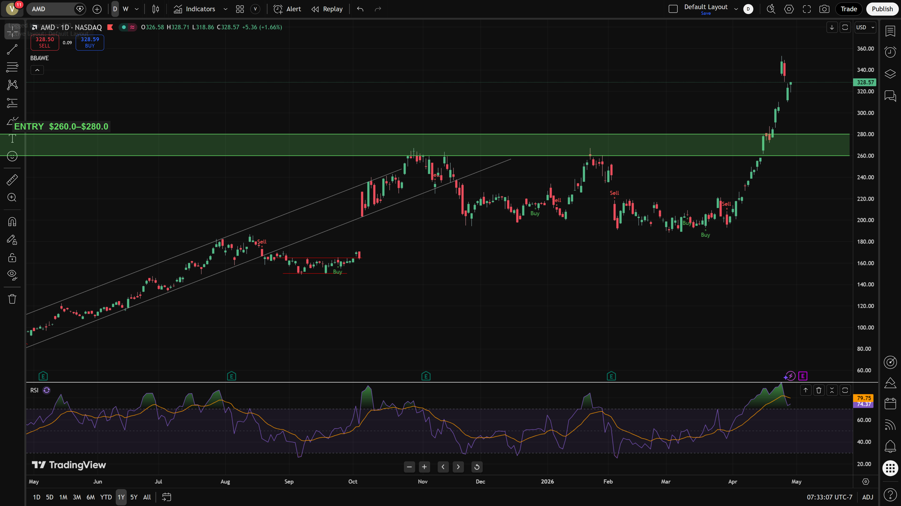
⇗ TopPrice: ~$328.57 | Entry Zone: $260–280
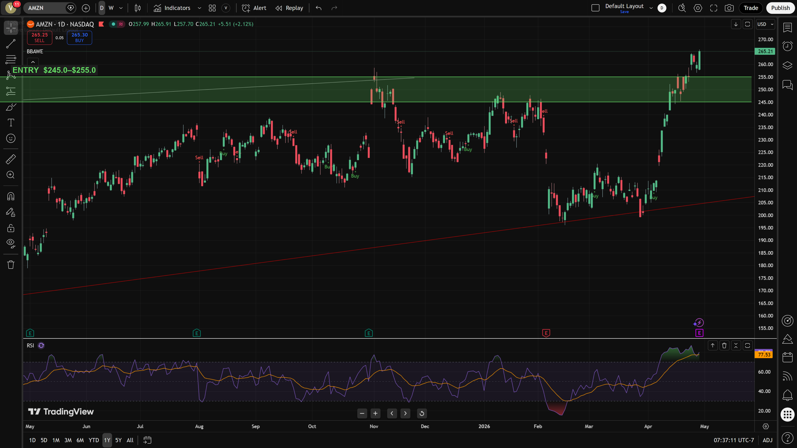
⇗ TopPrice: ~$265.21 | Entry Zone: $245.00–255.00
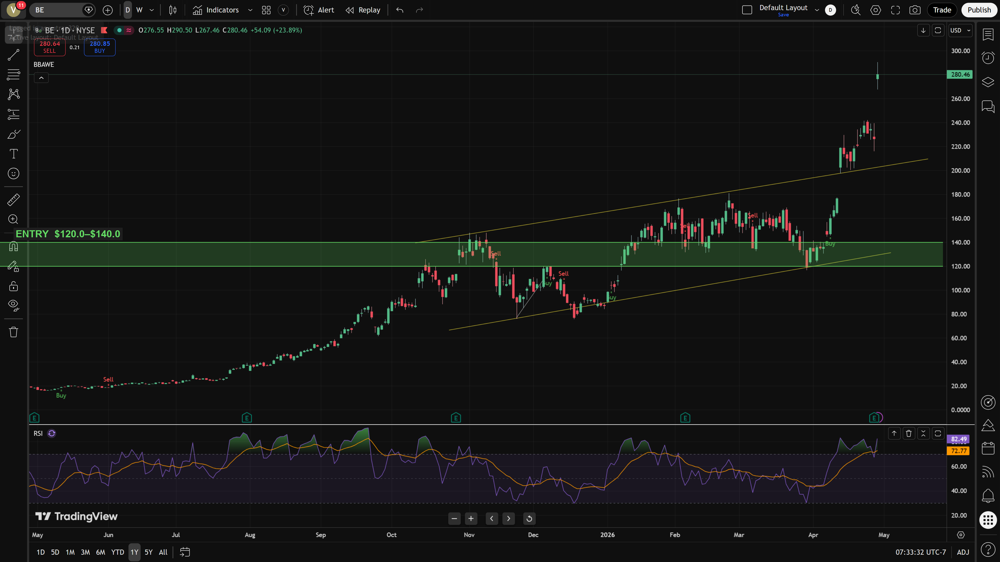
⇗ TopPrice: ~$280.46 | Entry Zone: $120–140
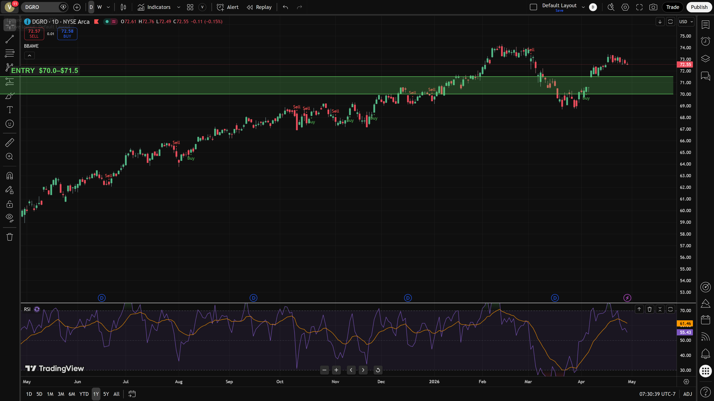
⇗ TopPrice: ~$72.55 | Entry Zone: $70.00–71.50
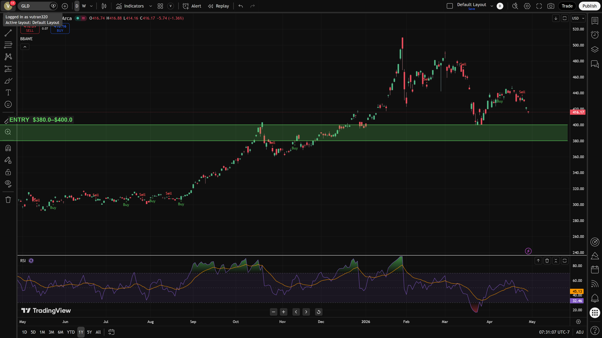
⇗ TopPrice: ~$416.17 | Entry Zone: $380–400
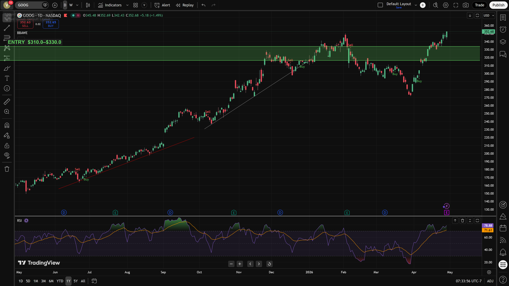
⇗ TopPrice: ~$352.68 | Entry Zone: $310–330
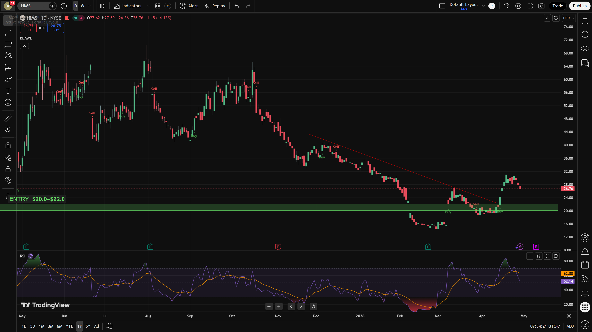
⇗ TopPrice: ~$26.76 | Entry Zone: $20.00–22.00
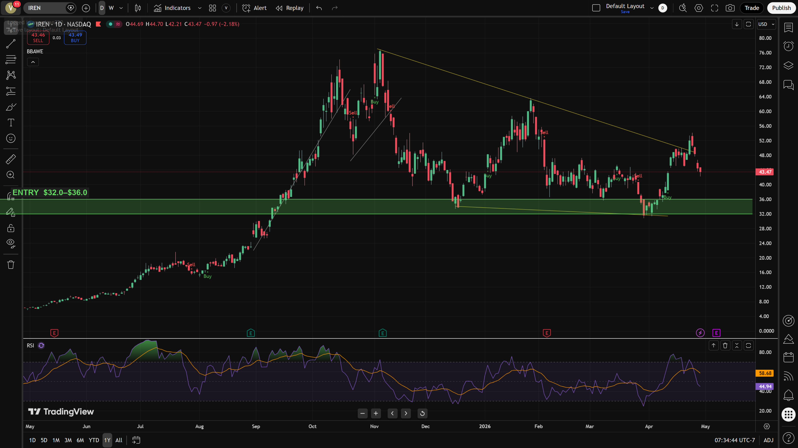
⇗ TopPrice: ~$43.47 | Entry Zone: $32.00–36.00
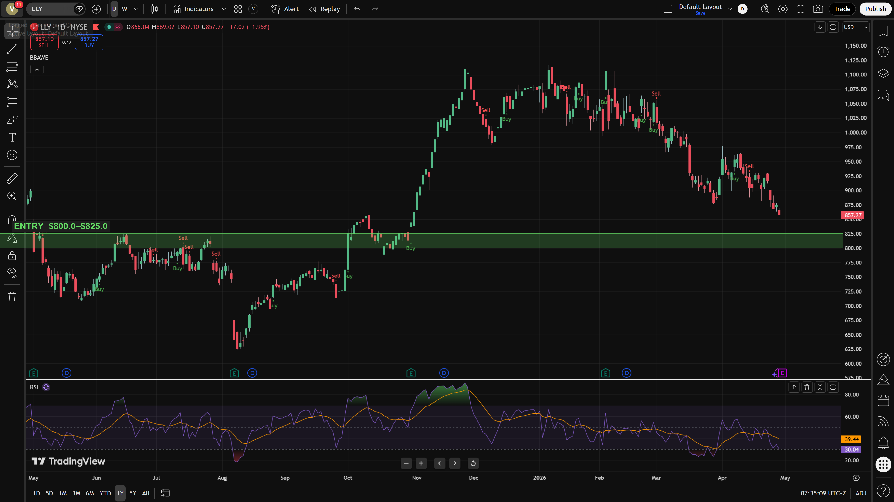
⇗ TopPrice: ~$857.27 | Entry Zone: $800–825
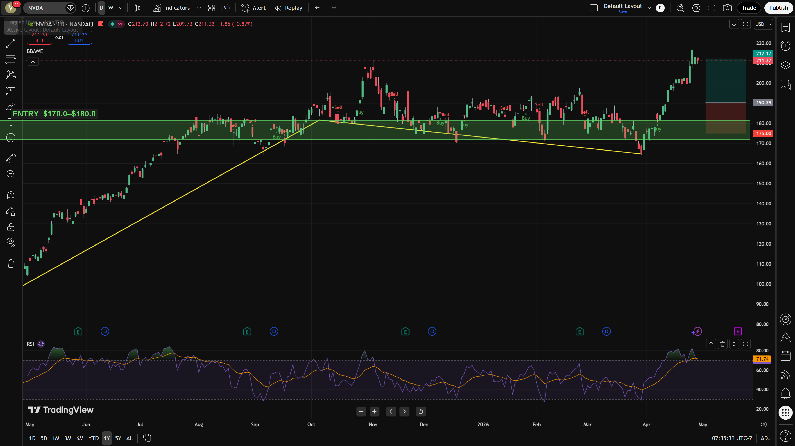
⇗ TopPrice: ~$211.32 | Entry Zone: $170–180
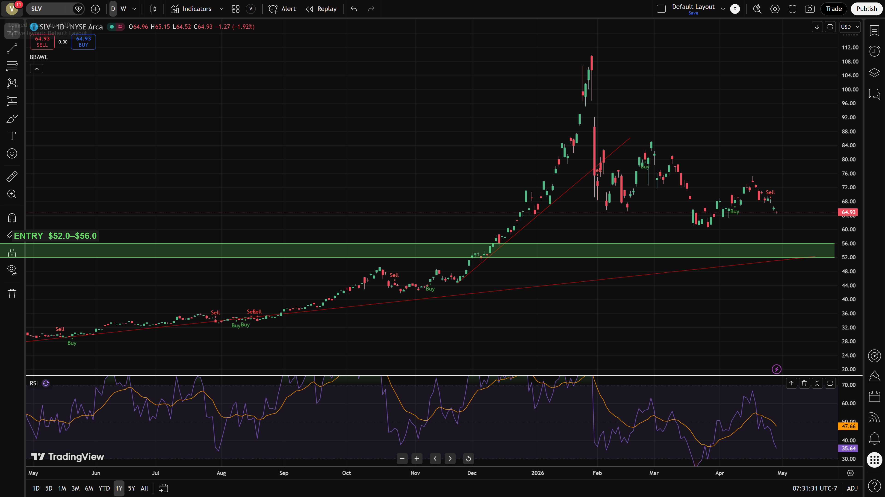
⇗ TopPrice: ~$64.93 | Entry Zone: $52.00–56.00
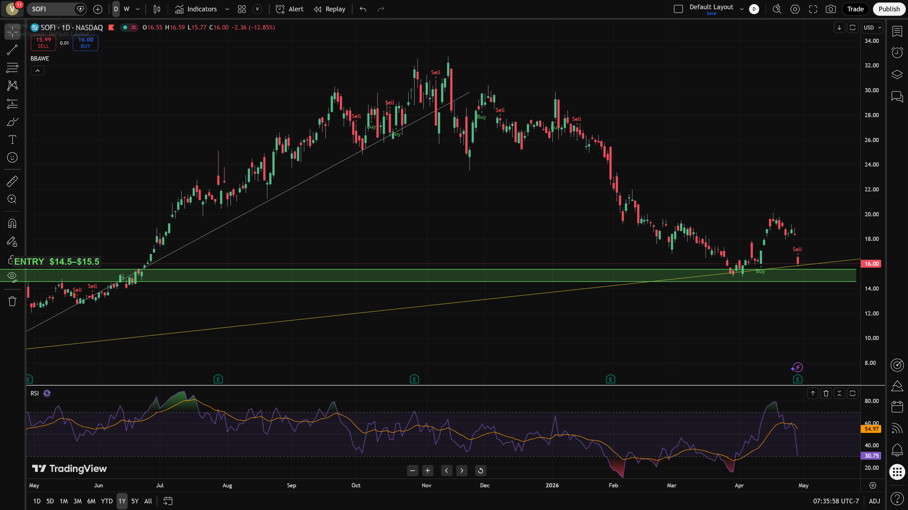
⇗ TopPrice: ~$16.0 | Entry Zone: $14.50–15.50
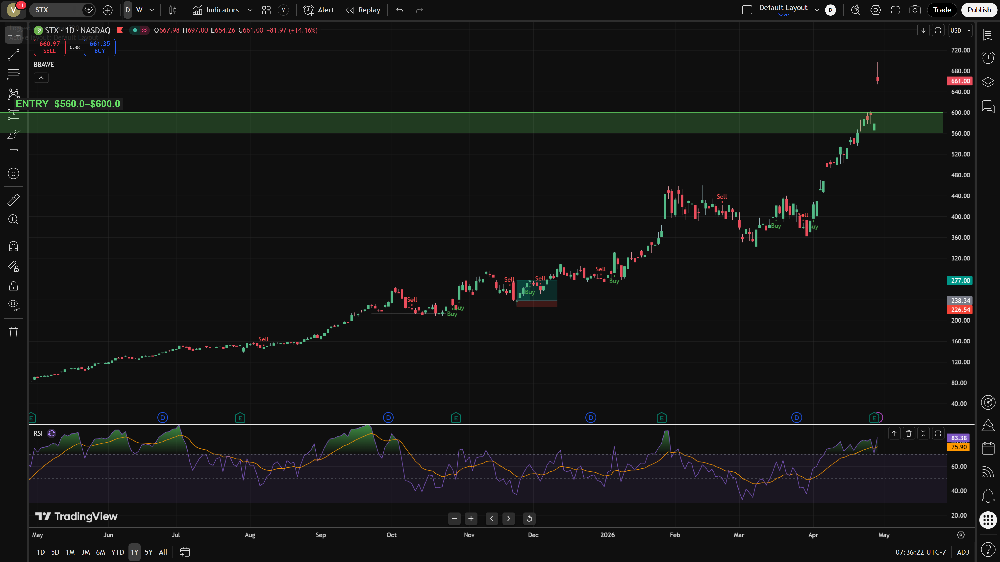
⇗ TopPrice: ~$661.0 | Entry Zone: $560–600
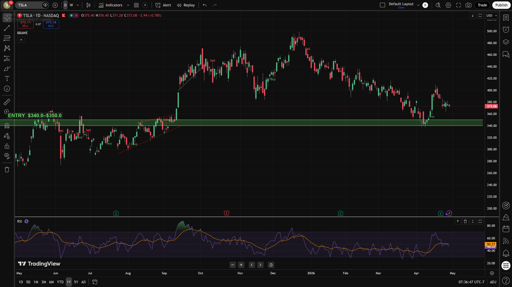
⇗ TopPrice: ~$373.08 | Entry Zone: $340–350
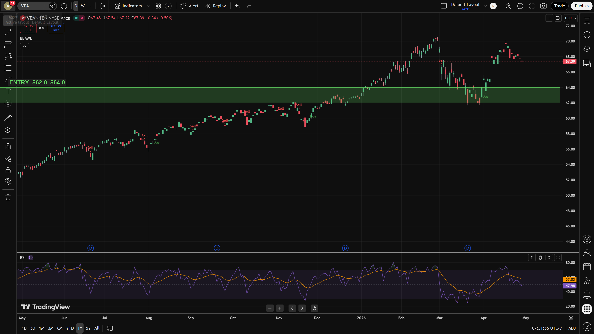
⇗ TopPrice: ~$67.39 | Entry Zone: $62–64
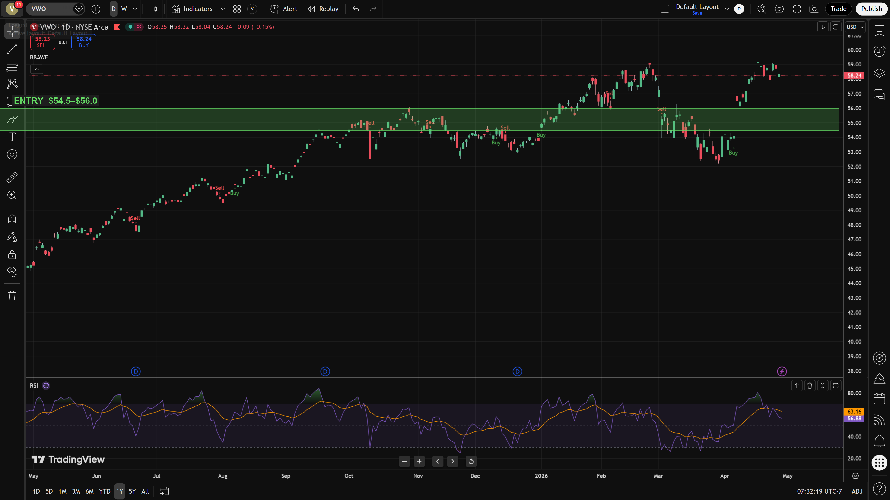
⇗ TopPrice: ~$58.24 | Entry Zone: $54.50 – 56.00
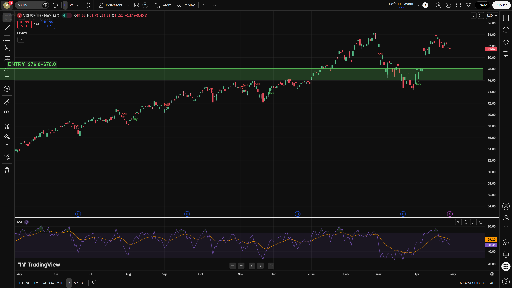
⇗ TopPrice: ~$81.52 | Entry Zone: $76.00–78.00